This week's assignment was to use a parametric approach to designing a press-fit kit.
As I started using Rhinoceros (and Grasshopper), I realized there would be a bit of maths involved:

The first thing I did was to re-create the basic components that I created in Illustrator for the last assignment and add some basic parameters for adjustment.
This was the non-parametrized re-creation of the main piece of the kit:
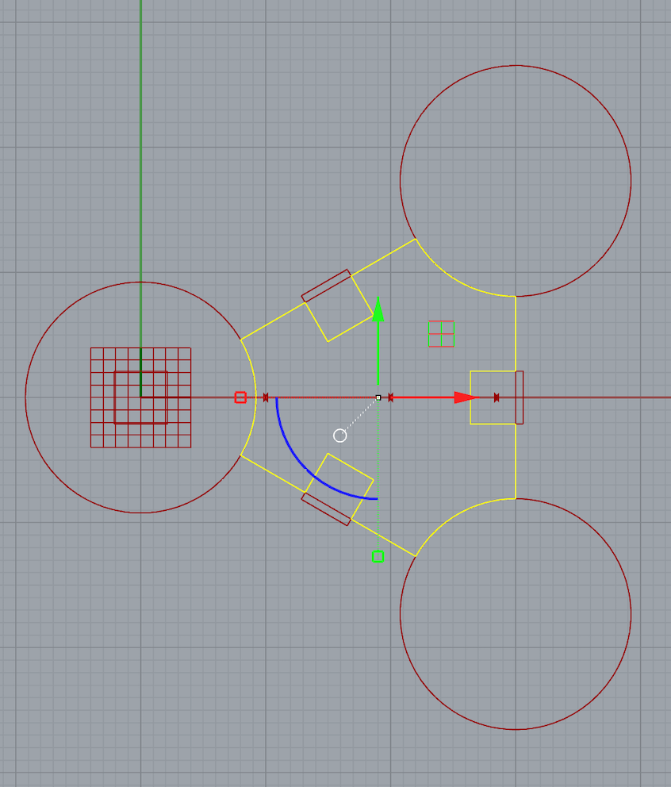
After adding some parametrization for the component, I made the sides flexible:
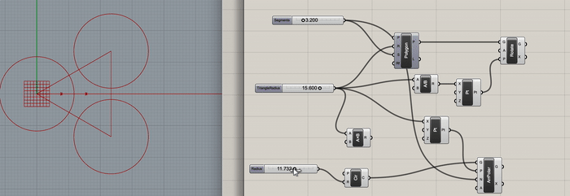
The next step was to do the same parametrization for the triangle sizes:
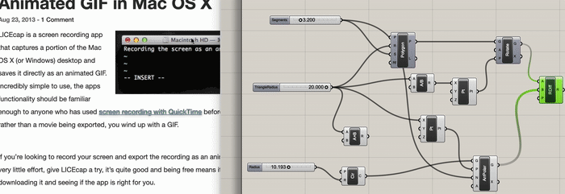
After the single piece was done, I parametrized the creation of multiple pieces using a slider:
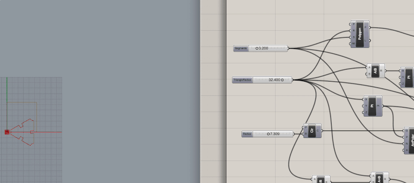
The more challenging part was to create the connector because of weird angles, and being able to understand how to mirror, rotate, and define a union of geometries:
…and eventually I landed on this:
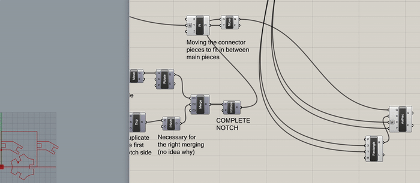
With this model ready, it is time to bake and…
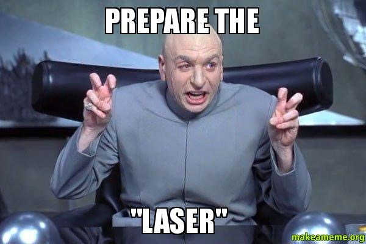
The initial cutting was a major pain -- the proportions were off, and the notches were incredibly loose.
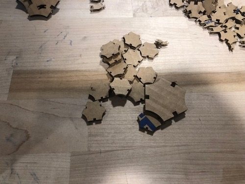
I ended up adding a measure that I could use to determine the actual size of the vectors:

...and this is how it was created in Grasshopper:

And how it was adjusted in Illustrator every time I printed something:
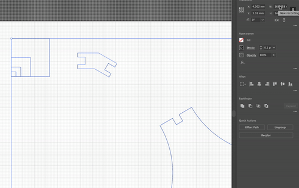
For the second material (other cardboard), I took initial measures:
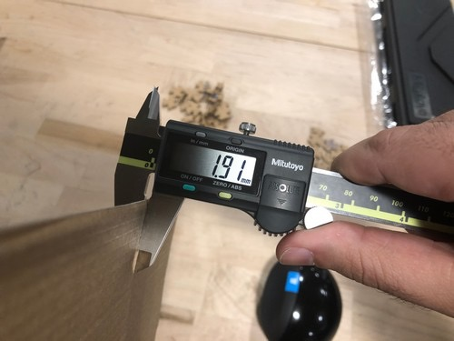
I did the proper adjustments in Rhino/Grasshopper:

Sent it to illustrator, did the resize, the cutting, and then had a bunch of new pieces:
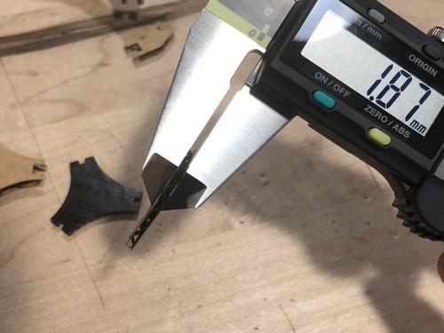
The notches (although small) have the right sizing:
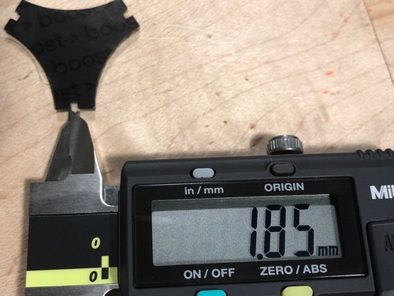
Here's a side by side with the iteration of the original pieces (on the left- same carboard material as in assignment 1), and the new pieces with their specific notch size (right):
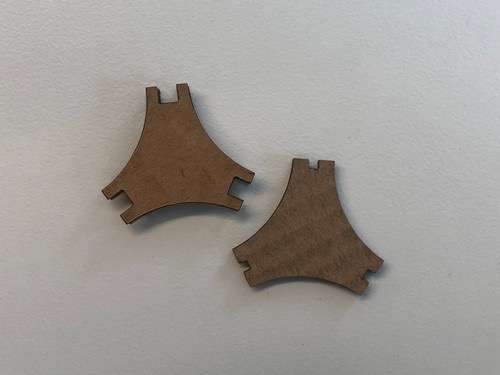
If I use the family of pieces to assemble with one another, it works!
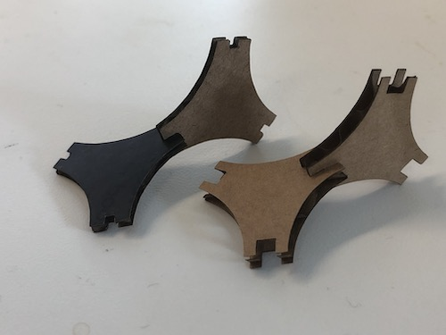
A different view where the material width can be more clearly observed:
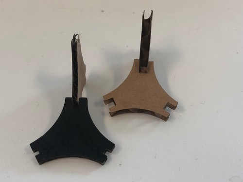
Using the specific connectors for each of the family of pieces -- the smaller ones are waaaaay to small:
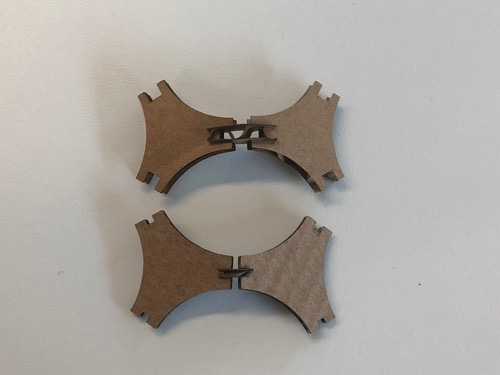
Building structures with both kinds of pieces and their smaller connector pieces:
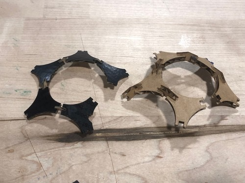
Here is a link to the artifacts created: Grasshopper file (aka. Rube-Goldberg-ish model).